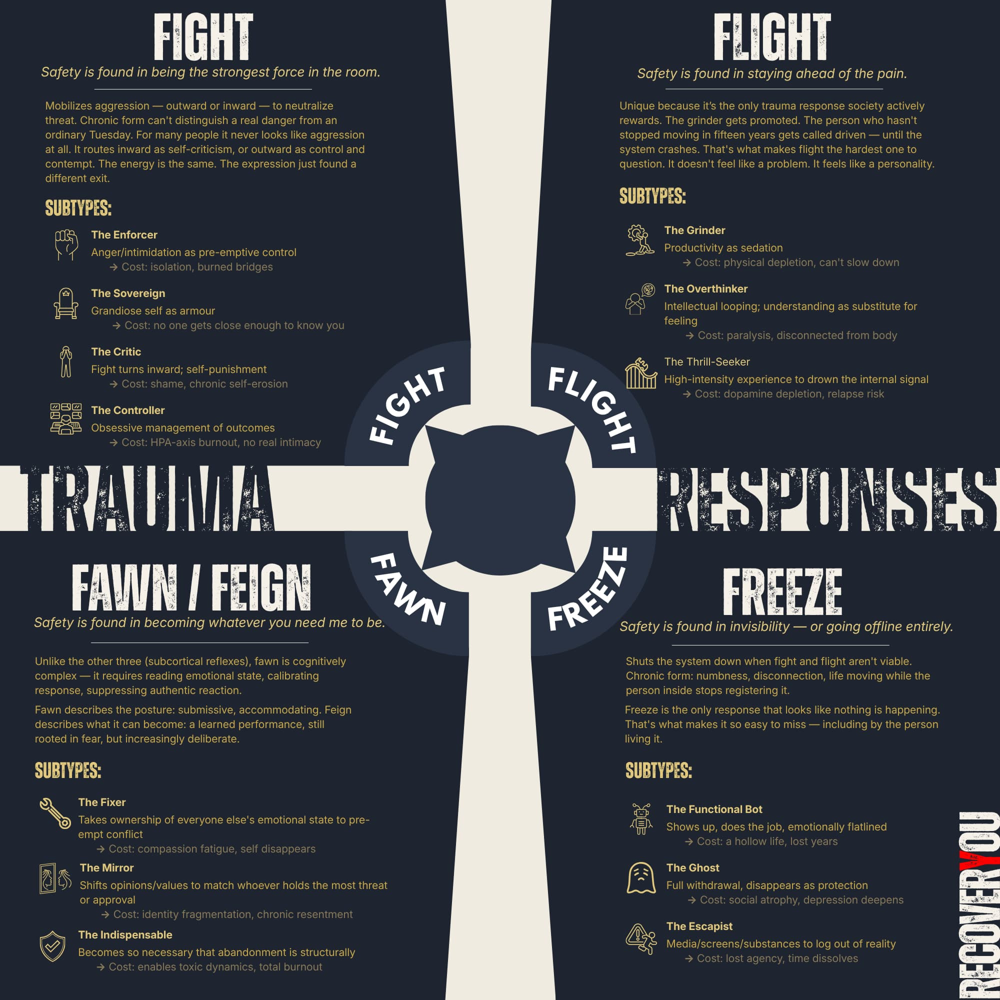

A note on sources
The framework on this page is built on Pete Walker's 4F model, which remains the most useful articulation of these survival patterns I've found. His work is the foundation. What's been added here is the addiction lens.
That mapping — how each response generates the specific internal conditions that substances are perfectly designed to address — came from treatment, from reading widely across trauma, neuroscience, and addiction research, and from working through what it actually felt like from the inside. The subcategory breakdowns, the fawn/feign distinction, and the Machiavellian endpoint are extensions of Walker's framework, not his conclusions.
Where I'm drawing on established literature I've said so. Where I'm offering my own read, I've flagged it.
Before I mapped myself against these, I spent time in the clinical literature. Much of it left me cold. The frameworks were technically accurate but, for me, useless to the person inside them — written by clinicians observing the behaviour from the outside, in a language built for other clinicians rather than the people sitting inside these patterns.
Pete Walker was different. His work on the 4Fs, and particularly his treatment of fawn, had a specificity the academic literature rarely reaches. Reading it, I started to recognize things. The kind of recognition that's uncomfortable because it's accurate.
The challenge was that Walker's framework lives mostly in the trauma space. The addiction dimension (my dimension) wasn't mapped out. How each response generates the internal conditions that substances are perfectly designed to address. To see it properly, I had to filter the whole framework through the lens of the addict. That's where it sharpened.
When I first started mapping myself against these, my intuition misled me. Twice. Which makes sense — intuition about yourself is built from the same material the trauma response shaped. It's not a neutral observer. It's part of the system it's trying to read.
My first read was Fight. That felt plausible, and I could point to evidence. What I couldn't see yet was that the fight was situational, a surface layer. The more honest answer was Flight. I'd been running from stillness, from feeling, from anything that required me to stop, for most of my adult life. I'd dressed it up to look like drive. But the running wasn't only from the inside — from the voices and the tension that showed up the second I stopped moving — it was also from the thing on the other side of stillness, which was connection. When someone got close, I had no idea what to do with it. So I kept moving, and called it a lot of things that weren't the truth.
Fawn I dismissed entirely. I read it as the weakest of the four: passivity, submission, people-pleasing. Not me. I was wrong about that too, and wrong on more than one level.
What broke it open was realising I wasn't one response. I was different responses in different contexts. Different people, different power dynamics, different rooms. That's when the subcategories started to matter. And that's when fawn sent me somewhere I wasn't expecting.
What I found there is what I find every time I dig into this honestly: the recognitions that make you wince are usually the useful ones. Every pattern I flinched at, traced back far enough, made complete sense. Not as a flaw. As an adaptation.
The fight response mobilises aggression, outward or inward, as a way to neutralise the threat. In the moment it evolved for, it made sense: confront the danger before it reaches you. In a chronic stress environment, it becomes a default setting that can't distinguish between a real threat and an ordinary Tuesday. Fight isn't equally available to everyone. Size, strength, and physical vulnerability are real variables, and for a child, or anyone facing someone much bigger, fighting back was never a survivable option. Others have been so emotionally diminished over time that even when fight is technically on the table, something inside will not let them reach for it. For many people, then, the fight response doesn't look like aggression at all. It routes inward as relentless self-criticism, or outward as control, contempt, or the quiet hostility of someone who has learned to win without raising their voice. The energy is the same. The expression just found a different exit.
The enforcer
Anger, volume, or intimidation used to control the environment before it becomes a threat.
Cost: isolation; burned bridges
The sovereign
A grandiose self built as armour. Admiration is demanded, criticism is unthinkable, and other people become either mirrors or threats.
Cost: no one gets close enough to know you
The critic
The fight turns inward. A punishing internal voice trying to beat the self into something that can't be hurt.
Cost: shame; chronic self-erosion
The controller
Obsessive management of people, schedules, and outcomes. If nothing surprises you, nothing can wound you.
Cost: HPA-axis burnout; no real intimacy
The flight response drives movement away from threat, whether physical, mental, or chemical. In its chronic form, it's not about running from something specific. It's about keeping enough velocity that whatever's behind you never catches up. Stillness becomes the danger. It's also worth noting that flight is the only trauma response society rewards. The grinder gets promoted. The overthinker gets called thorough. The driven, high-functioning person who hasn't stopped moving in fifteen years gets admired, until the system crashes. That's what makes it the hardest one to question. It doesn't feel like a problem. It feels like a personality.
The grinder
Productivity as sedation. Staying busy enough that stillness, and whatever lives there, never gets a foothold.
Cost: physical depletion; can't slow down
The overthinker
Intellectual looping. Analysing the threat from every angle, never landing. Understanding becomes a substitute for feeling.
Cost: paralysis; disconnected from body
The thrill-seeker
High-intensity experience or substances used to drown out the internal signal. Running toward the noise to escape the quiet.
Cost: dopamine depletion; relapse risk
The freeze response shuts the system down when fight and flight aren't viable. In acute threat, it's the body going still to avoid detection or reduce harm. In chronic form, it looks like numbness, disconnection, and a life that keeps moving while the person inside stops registering it.
The functional bot
Shows up, does the job, pays the bills. Emotionally flatlined the entire time. Life runs but nothing lands.
Cost: a hollow life; lost years
The ghost
Full withdrawal. Phone ignored, social demands avoided, presence reduced to the minimum. Disappearing as protection.
Cost: social atrophy; depression deepens
The escapist
Media, fantasy, substances, or screens used to log out of reality. Not numbing, just not being present for life.
Cost: lost agency; time dissolves
None of this exists in a vacuum. For most people reading this site, these responses don't just sit quietly in the background as personality quirks. They run hot, and they run straight into addiction.
The connection isn't incidental. Each survival response generates a chronic internal state, and substances or behaviours are well-designed for exactly that state. Fight produces arousal, shame spirals, and rage with nowhere to go; alcohol and opioids blunt the edge. Flight produces relentless hyperactivation that can't be switched off; stimulants extend the run, alcohol brings the landing. Freeze produces numbness and anhedonia so complete that nothing registers; substances become the only thing that does. Fawn produces chronic self-erasure and resentment with no sanctioned outlet; anything that briefly returns a sense of self, control, or relief fills the gap. The 4Fs don't cause addiction directly. They create the conditions addiction was made for.
The visible crisis
Addiction is what gets seen, by family, by clinicians, by the system. It's measurable, diagnosable, and demands attention. So it becomes the problem to solve. The behaviour that preceded it, sustained it, and will outlast treatment if left untouched (the survival response architecture underneath) rarely gets the same attention. Not because nobody cares. Because it isn't visible in the same way.
The misread cycle
When someone relapses, the explanation almost always points at the addiction: lack of willpower, incomplete program, poor readiness. Rarely does it point at the survival response that was still running underneath. The 4Fs sustain addiction because they sustain the internal conditions that made it necessary. Remove the substance without touching the response, and the nervous system simply finds another exit, or returns to the same one.
Some of the responses on this page look so much like addiction that they can be mistaken for it. Workaholism. Compulsive risk-taking. Endless scrolling. Emotional unavailability. These aren't always addiction. Sometimes they're the response the addiction was covering for, and the response was there first.
This matters clinically and personally. If the 4F responses are the engine, addiction is often the exhaust: the visible output of a system running on survival mode. Treatment that addresses only the exhaust leaves the engine running. Understanding your responses isn't a detour from recovery. For many people, it's the part that was missing.
The fawn section below goes deepest into this, partly because fawn is the most cognitively complex of the four, and partly because it has the most interesting relationship with addiction. The skills fawn develops don't just sustain the nervous system state that needs medicating. They can actively be used to secure the resources (substances, relationships, money, loyalty) that addiction requires. Which makes it the hardest response to see clearly, and the most important one to understand.
Safety is found in becoming whatever the hell you need me to be.
The first three responses are subcortical. They fire from the brainstem and limbic system before the thinking brain gets a vote. They're ancient, fast, and shared with animals that have almost no cortex. A deer freezes. A cornered dog fights. These aren't strategies. They're reflexes wearing behaviour as clothing.
Fawn is different in kind, not just degree. To successfully appease someone (to read their emotional state, calibrate your response, suppress your own authentic reaction, and perform whatever the threat requires) is a multi-layered cognitive task. It requires a level of social sophistication the perpetrator often doesn't possess. There's something quietly tragic in that: the child who becomes the most emotionally intelligent person in the room because they had to be, just to survive it.
The word fawn describes the posture: submissive, shrinking, accommodating. Feign describes what it can become: a learned performance, still rooted in fear, but increasingly deliberate. The distinction matters because one is a response, the other is a skill. And skills, unlike reflexes, are hard to give up.
A note on gender: fawn gets coded female by default, in the literature and in the culture. That's worth pushback. Male fawn tends to route through competence and charm rather than compliance and warmth, which makes it harder to clock, including in yourself. The man who is diplomatic, useful, quick to read a room, slow to assert a need: that's not easygoing. That's often fawn wearing a socially acceptable disguise. If you're a man who almost skipped this section because nothing here sounded like you, that's probably the most important reason to keep reading.
The fixer
Takes ownership of everyone else's emotional state to pre-empt conflict. Peace-keeping as a survival contract.
Cost: compassion fatigue; self disappears
The mirror
Shifts opinions, values, and personality to match whoever holds the most threat or approval in the room.
Cost: identity fragmentation; chronic resentment
The indispensable
Becomes so necessary to others that abandonment becomes structurally impossible. Love as insurance policy.
Cost: enables toxic dynamics; total burnout
The hostage
Think of someone held in a genuinely life-threatening situation. Not the negotiator on the outside, but the person inside. Cornered and helpless, they do the only thing left available to them: they start collecting data. Watching the face. Reading the body language. Mapping what triggers escalation and what buys calm. They suppress every authentic reaction (fear, anger, disgust) because any of those could end badly. They become agreeable, useful, even warm. Not because they want to. Because staying alive required it.
That's fawn. Not manipulation. Not weakness. A person who learned early that becoming who the threat needed them to be was the only reliable way to stay safe. The difference between that and someone trying to get something they want sounds subtle, but the motivator is completely different. One is survival. One is strategy. Fawn is survival wearing the costume of strategy, and people who grew up in it rarely know which one they're doing.
The tragedy isn't that it didn't work. It worked exactly as designed. The tragedy is that the person keeps using it long after they've left the room.
One thing worth stating before the next section: reading this can produce a specific kind of guilt. Not the guilt of having been hurt, but the guilt of recognizing how the hurt got used. That's a different feeling, and it deserves to be acknowledged rather than skipped over.
The Machiavellian endpoint — my read, not established literature
Where it gets murky is when the victim feigns fawning.
That's the inflection point. The moment fawn stops being a response and becomes a tool. The person is no longer appeasing out of fear. They're performing appeasement because they've learned it works. The fear is still the origin, but it's no longer the driver. And from the outside, it becomes almost impossible to distinguish from calculated manipulation.
Recognizing this pattern in a child (the deliberate performance of submission) signals significant intelligence. Not the kind anyone would ever even think to look for.
Pete Walker draws the line from fight to narcissism: the "narcissistic defense," where staying on top becomes a way to make being hurt impossible. I think fawn has its own endpoint on the other side of that same line.
The other three responses build patterns: hypervigilance, avoidance, dissociation. Fawn builds competencies. Years of reading people, managing emotional climates, telling people what they want to hear, pre-empting anger. Those aren't just coping mechanisms. They're skills. Relational intelligence wired to a threat-detection system rather than genuine connection.
When those skills run long enough without being examined, they can drift into something that looks Machiavellian from the outside: calculated people-reading, strategic self-presentation, using warmth as a tool. Not because the person is manipulative by nature, but because the original use case for that intelligence was survival, and the strategy never got updated.
I know this section well because I lived it. Not as an observer, but as someone who deployed these skills deliberately, and got results. The recognition didn't come from reading about it. It came from eventually having to account for it.
The compassion this deserves isn't small. It's the same compassion Walker asks us to extend to the fighter: not "this person is dangerous," but "this person learned something that kept them safe, and never had a reason to unlearn it."
If that had been your childhood, wouldn't you have used it too?
A note on schema therapy
If you've done schema work, some of this will feel familiar, and that's not your imagination. Schema therapy and the 4F framework are mapping the same underlying territory from different angles. Schemas describe what you came to believe about yourself and the world as a result of early experience. The 4Fs describe what your nervous system learned to do about it. Same architecture, different entry points.
They're kept separate here deliberately; merging them would blur distinctions that matter clinically and practically. If you want to explore how schemas map onto trauma responses, that work lives on its own page. Schema Therapy and Life Traps →

Four responses. Thirteen subtypes. Click to expand.
These aren't personality types. They're survival protocols — and most people are running more than one.
The graphic summarizes the full framework covered on this page: each of the four responses, the subtypes they produce, and what each one costs over time. It's designed as a reference — something to return to after the reading, when the question shifts from what is this to which one is me.
One thing worth keeping in mind as you use it: most people don't map cleanly onto a single response. The framework gets sharper when you stop looking for the one that fits and start noticing which responses show up in which contexts — different rooms, different relationships, different power dynamics. That's usually where the real picture is.
The fawn/feign distinction is flagged separately because it sits differently from the other three — less a reflex, more a learned competency. If that one lands harder than expected, that's probably not a coincidence.
Follow the next step in order, or branch out into related topics.
The 4F framework originates with Pete Walker — Complex PTSD: From Surviving to Thriving (2013). The addiction lens, subcategory breakdown, fawn/feign distinction, and Machiavellian endpoint are extensions developed independently for this site. The Machiavellian endpoint section is my own interpretation and is not established literature. Educational only — not clinical advice.